Tools screen
Tools Screen
Overview
| OLED | E-Ink |
|---|---|
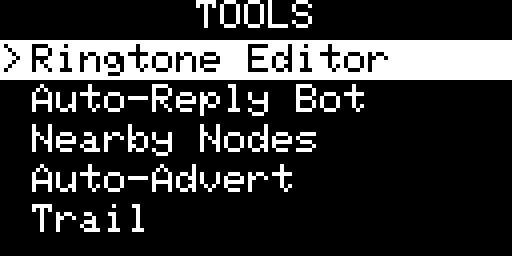 |
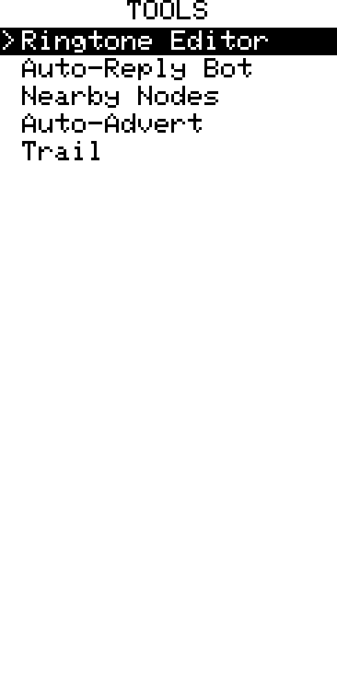 |
The Tools screen is a hub for GPS trail recording, nearby node browsing, ringtone editing, auto-reply bot, auto-advert, compass, device diagnostics, and repeater mode. Navigate the tool list with UP/DOWN and press Enter to open a tool.
Nearby Nodes
| OLED | E-Ink |
|---|---|
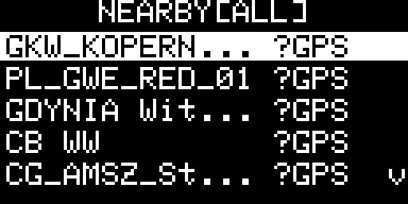 |
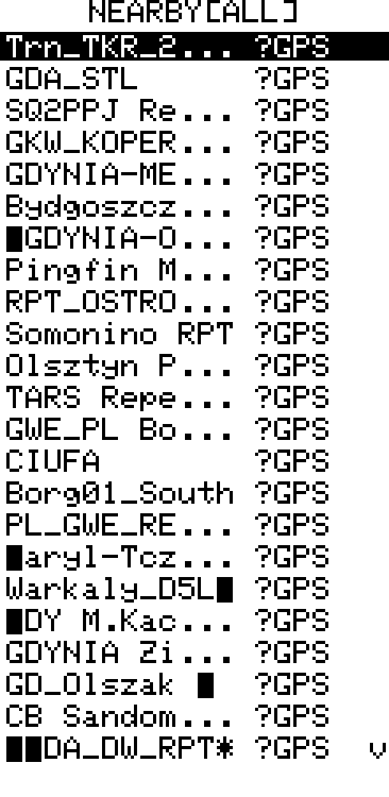 |
Browse nodes that have recently advertised on the mesh. Filter (which nodes) and sort (in what order) are independent axes and combine freely.
Filter by category with LEFT/RIGHT (one coherent axis — type only):
| Filter | Shows |
|---|---|
| All | All known nodes |
| Fav | Upstream-starred contacts only |
| Comp | Companion (chat) nodes |
| Rpt | Repeaters |
| Room | Room servers |
| Snsr | Sensors |
Select a node to see its coordinates, distance, bearing with cardinal direction, type, and last-heard time.
Hold Enter opens the same Options menu everywhere (list and detail), in a fixed order — only the actions that apply appear:
| Action | Available when |
|---|---|
| Navigate | selected node has GPS |
| Ping | a public key is known for the node |
| Save waypoint | selected node has GPS |
| Sort: Dist/Recent | browsing stored nodes — LEFT/RIGHT on the row flips distance ↔ last-heard in place |
| Discover scan / Rescan | always (live NODE_DISCOVER_REQ scan) |
Filtering stays on the list itself (LEFT/RIGHT cycles the type), so there is no separate Filter action in the menu. Sort is adjusted in place: highlight the Sort row and tap LEFT/RIGHT to flip the list (and its right-hand column) between distance and last-heard without closing the menu — the same in-popup pattern as Trail's settings. The row appears only while browsing stored nodes (live-scan rows carry signal, not distance). Filter and sort are independent and persist across re-entry to the screen.
Selecting Ping opens the Ping popup:
| OLED | E-Ink |
|---|---|
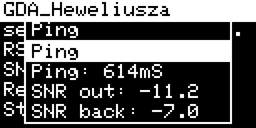 |
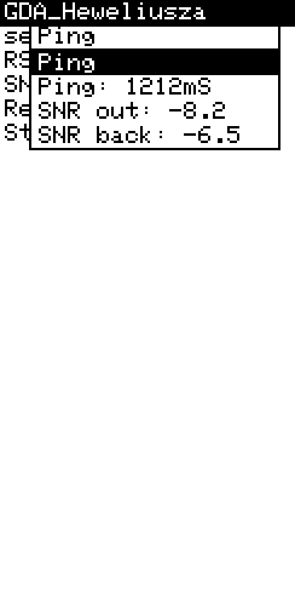 |
Use Enter on the popup’s Ping row to send a direct mesh ping to that node. The popup then shows the RTT and SNR values on the next lines, and can be used again immediately for another ping.
[!TIP] Combined with Auto-Advert on the other device, Nearby Nodes becomes a passive location tracker — as long as the tracked device periodically broadcasts its GPS position, you can see its current distance and bearing without any manual interaction on either end.
Active Discovery (live scan)
| OLED | E-Ink |
|---|---|
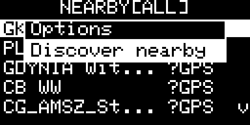 |
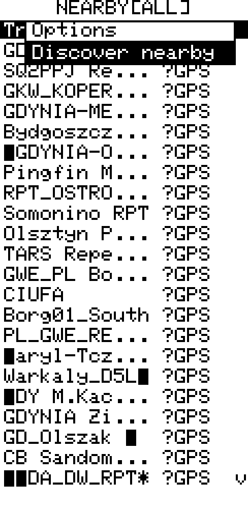 |
Options → Discover scan sends a NODE_DISCOVER_REQ. Repeaters, sensors and room servers within zero-hop range respond immediately with name, type and signal data. This is not a separate screen — it is the same list switched to a live-scan source: the right-hand column shows RSSI instead of distance, and node detail shows the public key, signal data and contact status.
Because it is the same list, all the same keys apply — UP/DOWN to navigate, Enter for detail, Hold Enter for the Options menu (where Rescan repeats the scan and Ping works exactly as on stored nodes).
- Cancel / Back — return to the stored-nodes list
GPS Trail
| OLED | E-Ink |
|---|---|
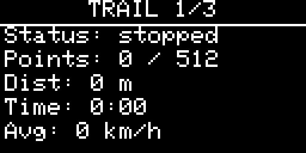 |
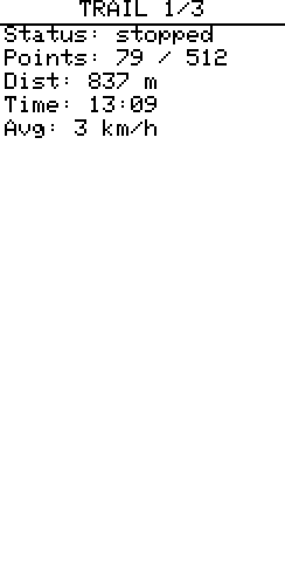 |
Records your route in a RAM ring buffer (up to 512 points, sampled every 1 s). Tracking runs in the background — a blinking G appears in the status bar. The trail survives display auto-off but is lost on reboot unless saved to flash first.
Cycle views with LEFT / RIGHT:
| View | Content |
|---|---|
| Summary | Distance, elapsed time, avg speed or pace, point count, tracking status |
| Map | Auto-fit dot-and-line plot with cos(lat) aspect correction; segment breaks marked; north arrow; square scale grid fitted to the map frame (toggle under Hold Enter → Settings → Grid, Map view only). Your current GPS position and all waypoints are always drawn — even with no trail recording — so the map is useful standalone |
| List | Per-point rows showing local time (HH:MM) and delta distance from the previous point; segment-start rows show start; scroll with UP/DOWN |
| OLED | E-Ink |
|---|---|
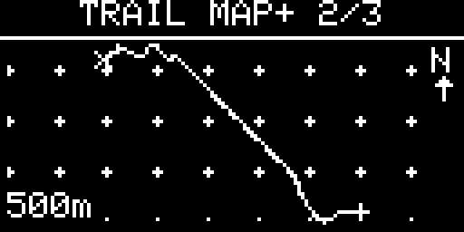 |
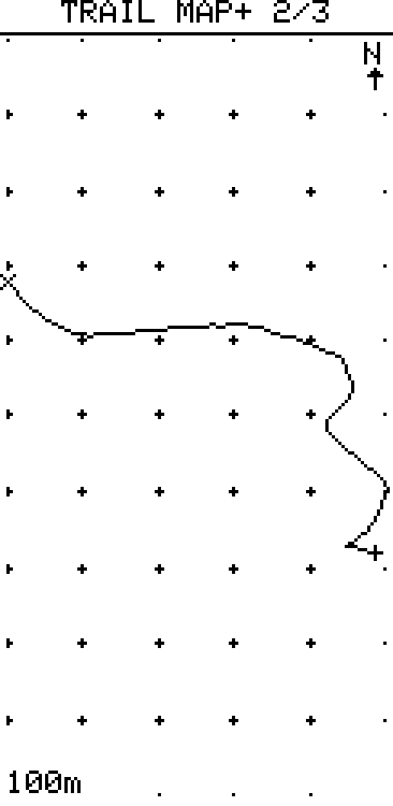 |
Hold Enter opens the action menu. It is two-level — a short main menu, plus Trail file… and Settings… submenus. Cancel/Back in a submenu returns to the main menu.
Main menu:
| Item | Action |
|---|---|
| Start / Stop tracking | Begin or end a recording session |
| Mark here | Drop a waypoint at the current GPS fix (see below) |
| Waypoints… | Open the waypoint list / navigation / add-by-coords |
| Trail file… | Open the file submenu (below) |
| Settings… | Open the settings submenu (below) |
Trail file… (only the operations that apply right now appear):
| Item | Action |
|---|---|
| Save trail | Write RAM ring to flash (/trail) |
| Load trail | Restore flash trail into RAM |
| Export (live) | Stream live RAM trail as GPX 1.1 over USB Serial |
| Export (saved) | Stream saved flash trail as GPX 1.1 over USB Serial |
| Reset trail | Clear RAM ring and elapsed time |
Settings… (values cycle with LEFT/RIGHT or Enter; shown only where they apply):
| Item | Available | Action |
|---|---|---|
| Min dist | always | Sample gate, 4 levels — metric: 5/10/25/100 m, imperial: 15/30/75/300 ft |
| Readout | Summary view | Summary shows Speed or Pace (in the global unit system) |
| Grid | Map view | Toggle scale grid on the map |
(Trail file… appears only when a live or saved trail exists. Mark here needs a GPS fix; Waypoints is always available.)
Waypoints
A waypoint is a saved spot — your car, camp, a water source — that you can navigate back to later. Waypoints are independent of the trail: they live in their own flash file (/waypoints), survive a reboot, and are not cleared by Reset trail. Up to 16 can be stored — the Waypoints list header shows how many are in use (e.g. WAYPOINTS 3/16).
Dropping a waypoint — Hold Enter → Mark here. This captures the current GPS fix and opens the on-screen keyboard for a short label (up to 11 characters — e.g. CAR, CAMP, H2O). Leaving it blank auto-names it WP1, WP2, … Marking works whether or not the trail is being recorded; it needs a GPS fix (otherwise it reports No GPS fix).
Adding by coordinates — open Hold Enter → Waypoints and select the + Add by coords row (always the last entry in the list). This creates a waypoint without being there — no GPS fix required (handy for a meeting point or a spot read off a map). It opens a small form with three editable rows plus Save:
- Lat / Lon — Enter opens the keyboard to type the value in decimal degrees (magnitude only; the keyboard has no minus sign), and LEFT/RIGHT toggles the hemisphere — N/S for latitude, E/W for longitude.
- Label — Enter to type a name (blank → auto
WP<n>). - Save — validates the range and stores the waypoint. Missing or out-of-range values report a brief error.
On the map — saved waypoints show on the Trail Map view as a hollow diamond with the label's first two characters beside it (enough to tell nearby waypoints apart). Waypoints and your current GPS position are drawn continuously — even with no trail recording in progress — so the Map view doubles as a live "you + your marks" view, not just a recorded-track plot. With no trail, the view auto-fits to your waypoints and position. While a trail exists, the view frames the recorded route instead, and any waypoint that falls outside it is clamped to the nearest map edge — a distant mark can't blow up the scale and squash the trail.
Navigating — Hold Enter → Waypoints opens the list (each row shows the label and live distance). The list always begins with a synthetic Trail start row whenever a trail exists, so you can backtrack to where you began without having marked it. Select a row and press Enter to open the navigation view:
CAMP ← target label
1.4 km ← distance to target
To: 145° SE ← absolute bearing to the target
Hdg: 090° E ← your current course over ground (-- when stationary)
There is no magnetometer, so the screen shows two absolute bearings and you compare them: target at 145°, travelling at 90° → bear right. The Hdg line is derived from GPS movement (see Compass) and reads -- until you move.
Managing — Hold Enter on a waypoint row offers Rename / Delete / Send (the Trail start row is navigate-only). Delete removes one at a time; there is no bulk clear.
Sharing — Send hands the waypoint to the Messages screen: pick a contact or channel, and the message is pre-filled as [WAY]<lat>,<lon> <label> (e.g. [WAY]37.42123,-122.08456 CAR) for you to confirm or edit before sending. On the receiving device, opening that message and Hold Enter → Navigate / Save waypoint turns it back into a navigable point (see Messages › Fullscreen message view). The format is plain text, so it stays readable on other firmware and the phone app.
Downloading GPX
Easiest — Solo GPX Downloader (browser-based, no install):
- Open the link in Chrome or Edge (Web Serial API required).
- Click Connect device and select the USB serial port.
- On the device: Tools › Trail → Hold Enter → Export (live) or Export (saved).
- The browser captures the stream automatically — set a filename and click Download.
Script — tools/trail_export.py (auto-detects the port, captures from <?xml to </gpx>, writes a timestamped file under tools/gpx/):
uv run tools/trail_export.py
Then on the device: Tools › Trail → Hold Enter → Export (live) or Export (saved).
Manual fallback — open a serial terminal at 115200 baud and capture the stream by hand:
- macOS/Linux —
cat /dev/tty.usbmodem* > track.gpx(stop with Ctrl-C after the dump finishes) - Windows — PuTTY (Serial, 115200) or Arduino IDE Serial Monitor with no line ending; copy the text from
<?xmlto</gpx>into a.gpxfile
Saved waypoints are included in the export as GPX <wpt> elements (with their label as <name>), alongside the track — so they show as pins in OsmAnd, Garmin BaseCamp, GPX Studio, Google Earth, etc. Either way, the resulting file imports into all of those.
[!NOTE] If the companion app is connected via BLE, the export is safe — BLE and USB operate independently. If connected via USB, disconnect the app before exporting.
Auto-Advert
Periodically broadcasts a 0-hop advert with your GPS position. Configurable interval: off / 30 s / 1 min / 2 min / 5 min / 10 min / 30 min / 1 h. A blinking A appears in the status bar while active.
[!TIP] Audible connection heartbeat — the device chirps each time it receives an advert from any node (sound chosen in Settings › Sound › AD sound). With Auto-Advert running on both ends (e.g. two people on a hike), each hearing the other's periodic advert becomes a hands-free "in range" beep — no need to look at the screen. It fires for every received advert, so in a busy mesh it can get chatty; choose
Nonein Settings › Sound › AD sound to silence just this event, or set Settings › Sound › Advert scope toZero-hopto limit it to local adverts only. You can also set Settings › Sound › Buzzer to Off (or Auto, which mutes while a companion app is connected) to silence all buzzer output.
Compass
A heads-up GPS compass. The L1 has no magnetometer, so the heading is the course over ground — derived from how your GPS position moves over the last few seconds. The display is a horizontal heading tape: a fixed travel-direction pointer sits at the centre and the N..E..S..W scale scrolls underneath it as you turn, so whatever is under the pointer is your current course. A large numeric readout below shows that course in degrees and cardinal (e.g. 145° SE).
Because the heading comes from movement, it only updates while you are actually moving: standing still shows move to set heading (and navigation's Hdg line reads --). Gross GPS jumps are rejected so a single bad fix can't swing the heading. The heading source runs whenever there's a GPS fix — recording a trail is not required.
Ringtone Editor
| OLED | E-Ink |
|---|---|
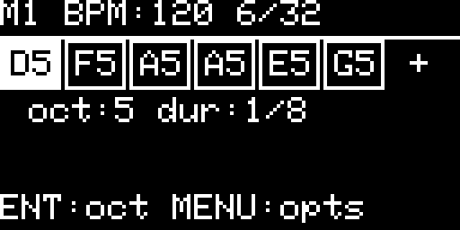 |
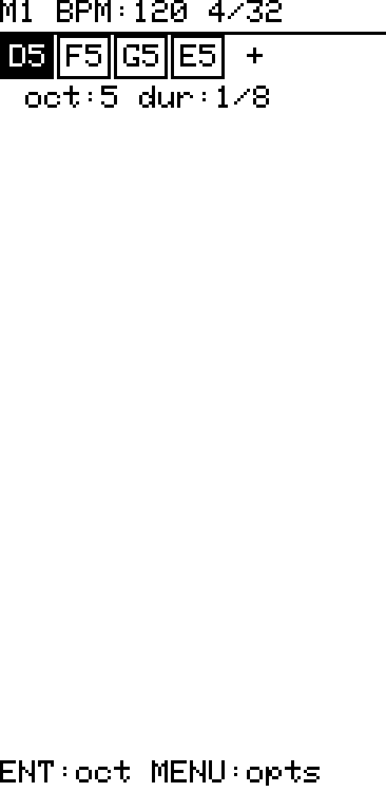 |
A step sequencer for composing custom notification melodies. Two slots — Melody 1 and Melody 2 — switchable from within the editor.
Each melody supports up to 32 notes:
| Parameter | Options |
|---|---|
| Pitch | C / D / E / F / G / A / B / pause |
| Octave | 4 – 7 |
| Duration | 1/4 / 1/8 / 1/16 / 1/32 |
| BPM | 60 / 90 / 120 / 150 / 180 |
Navigation in the editor:
- LEFT/RIGHT — move between notes
- UP/DOWN — change pitch of selected note
- Enter — cycle octave of selected note
- Hold Enter (or context menu) — open options menu
Options menu:
| Item | Interaction | Action |
|---|---|---|
| Play / Stop | Enter | Preview the melody |
| Melody 1 / 2 | Enter | Switch to the other slot |
| Duration | LEFT/RIGHT | Cycle duration for selected note |
| BPM | LEFT/RIGHT | Cycle tempo |
| Insert | Enter | Insert a new note after the cursor |
| Delete | Enter | Delete the note at cursor |
| Save & Exit | Enter | Persist the melody and return to Tools |
| Discard | Enter | Return to Tools without saving |
Melodies can be assigned in Settings › Sound (global default) or overridden per contact or channel from the Messages screen context menu.
Auto-Reply Bot
| OLED | E-Ink |
|---|---|
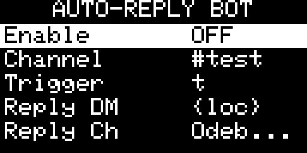 |
Automatically replies to incoming messages that contain a configured trigger word (case-insensitive, contains match).
When the bot is enabled it listens to DMs by default. Channel monitoring is an optional addition — select a channel separately to activate it alongside DM mode.
| Setting | Description |
|---|---|
| Enable | ON / OFF — enables DM listening |
| Channel | OFF, or which channel to additionally monitor (cycles through your channels) |
| Trigger DM | Word or phrase that activates the DM reply (case-insensitive). A lone * means reply to every DM (away mode) and is shown as (any msg). |
| Reply DM | Reply text for DMs; supports {time}, {loc} and sensor placeholders |
| Trigger Ch | Independent trigger for the monitored channel. * means reply to every channel message — bounded by the per-channel cooldown, but use sparingly on a busy channel. |
| Reply Ch | Reply text for channel messages; supports the same placeholders |
| Commands | ON / OFF — answer ! query commands (see below) |
| Quiet from/to | Local-time window during which auto-replies stay silent; set both equal (OFF) to disable |
The DM and channel triggers are independent, so you can run e.g. an away-message (*) in DMs while the channel reacts only to a specific keyword (or vice-versa).
The header shows a running count of auto-replies sent since boot.
Throttle. Auto-replies are rate-limited per contact (10 s), so a second sender is never starved while one contact is on cooldown. The channel bot keeps a single 10 s cooldown and won't echo a message identical to its own reply (so two bots running the same reply text on one channel can't ping-pong); the cooldown caps any residual back-and-forth.
Quiet hours suppress the push (trigger) replies between the configured local hours; a window where from is later than to wraps past midnight. Commands are a pull (explicitly requested), so they answer even during quiet hours.
Commands
With Commands ON, a DM beginning with ! is answered with live node data, independent of the trigger:
| Command | Reply |
|---|---|
!ping |
pong |
!batt |
battery voltage |
!loc |
GPS coordinates (or no GPS) |
!time |
local time HH:MM |
!temp |
temperature (or n/a if no sensor) |
!hops |
how many hops the command message took to reach the node (direct if heard directly) |
!status |
combined battery / location / time |
!help |
list of available commands |
Several commands can be combined in one message — !batt !time !hops is answered with a single 4.10V | 14:30 | 3 hops reply (one transmission). A message with no recognised command falls through to the trigger bot.
Commands also work on the monitored channel (the one selected for channel mode) — anyone there can query the node. Channel replies are broadcast to everyone, so unlike DM commands they respect quiet hours and use the shared per-channel cooldown. DM commands use the per-contact throttle.
Diagnostics
A single read-only screen of live device and mesh stats, refreshed once a second. On a small OLED the rows scroll with UP/DOWN; on a larger e-ink display they all fit at once.
| Row | Shows |
|---|---|
| Uptime | Time since boot (d hh:mm:ss) |
| Total rx/tx | All received / transmitted packets, summed across the categories below |
| Msg | Text and group-text packets, rx/tx |
| Advert | Advert packets, rx/tx |
| Ack/Path | Ack, path-return and trace packets, rx/tx |
| Other | Everything else (requests, responses, control, raw, …), rx/tx |
| Forwarded | Packets this node actually re-transmitted as a repeater (reflects overhear suppression, if on) |
| Heap free | Free / total heap |
| Stack free | Current task's minimum-ever stack headroom |
| Noise floor | Live radio noise floor (dBm) |
| RSSI/SNR | Signal strength / signal-to-noise of the last received packet |
| Pool free | Free entries in the packet pool |
| Queue | Packets waiting in the outbound queue |
| Errors | Radio error flags since boot/reset — OK, or tokens F (queue full), C (CAD timeout), R (RX-start timeout) |
The packet counters, Forwarded and Errors are cumulative since boot. Hold Enter opens a one-item Reset counters menu (Back dismisses it); the live readings (noise, RSSI/SNR, pool, queue, uptime) are not affected. Cancel/Back returns to the Tools list.
The counters make the repeater behaviour observable: Forwarded confirms the node is actually relaying (not just configured to), and Pool free / Queue show whether forwarding is exhausting the packet pool. See Tools › Repeater for the relaying options.
Repeater
Turns the companion into a packet repeater while it keeps working as a normal companion — no separate firmware. By default, enabling it switches the radio to a dedicated repeater profile rather than relaying on whatever network you're chatting on (see Network below) — that matches the MeshCore community norm of repeaters sitting on a standard channel, not a private one. Loop-detection and an advert flood-depth cap are always applied. This screen keeps the toggle, the network/profile, and its flood-filter options together; live forwarding stats are on Tools › Diagnostics.
Navigate with UP/DOWN; change a value with LEFT/RIGHT (or Enter for toggles). Cancel/Back saves and returns to Tools.
| Setting | Options | Notes |
|---|---|---|
| Repeater | ON / OFF | Master switch. The options below appear only while it is ON. |
| Network | Current / Custom | Custom (default): enabling the repeater switches the radio to a dedicated profile (below) and disabling restores the companion's settings — so you can drop onto a separate repeater network and come back. A never-configured device seeds Custom with a frequency in the same band as your own network (433/868/915 MHz region), not a flat one-size-fits-all default — so it can't land outside what's legal for your region. Switching to Custom afterwards (if it was OFF and unconfigured) seeds it from your current settings instead. Current: relay on the companion's own frequency — opt-in; not the community norm. |
| Rpt preset | named presets | (Custom only) Enter picks a community/saved preset for the repeater profile. |
| Rpt freq | chip range | (Custom only) Enter opens the digit-by-digit editor (chip-validated bounds). |
| Rpt SF / BW / CR | 5–12 / 7.8–500 kHz / 5–8 | (Custom only) LEFT/RIGHT to adjust the profile's spreading factor, bandwidth, coding rate. |
| Skip advert | ON / OFF | Don't re-flood advert packets (the highest-volume flood traffic); messages and acks still relay. |
| Max hops | OFF / 1–8 | Drop a flood packet once it has already travelled this many hops. |
| Yield | OFF / x2–x9 | Scales the retransmit delay for forwarded floods only (your own sends are unaffected), so a mobile companion defers to better-sited fixed repeaters. Widens the window for Suppress dup. |
| Min SNR | OFF / −20…10 dB | Drop a flood copy received below this signal-to-noise threshold, so marginal fringe traffic isn't re-flooded. |
| Suppress dup | ON / OFF | If the same flood packet is overheard from another node while still queued to retransmit, cancel our copy — a peer already relayed it. Cuts redundant airtime in dense meshes; pairs with Yield. |
The five flood filters are opt-in (default OFF, so a plain repeater is unaffected) and act on flood traffic only — on a direct route this node is the named next hop, so it never drops those.
Same network vs. separate network. With Network = Current (or a Custom profile set equal to your companion settings) the repeater stays on your own network — you keep messaging while relaying. With a different Custom profile the device moves entirely onto that network while relaying (a single radio can't be on two at once) and returns to your companion network when the repeater is switched off. The profile also re-applies after a reboot if the repeater was left on.
While the repeater is on, a » indicator appears in the status bar (same blink convention as the auto-advert and trail markers) so you can tell it's relaying at a glance. Two radio settings are also overridden while relaying and restored afterwards: Settings › Radio › Pwr save is forced off (a repeater must listen continuously) and Auto pwr is forced off (a repeater holds full TX power for consistent relay reach). Both show -- in Settings while the repeater is on.
Live forwarding stats — Forwarded, Pool free, Queue — are shown on Tools › Diagnostics (this screen is config-only).